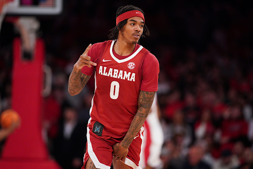
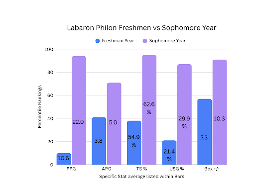
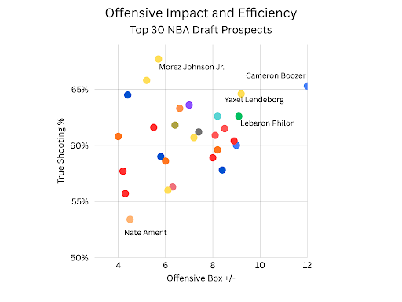
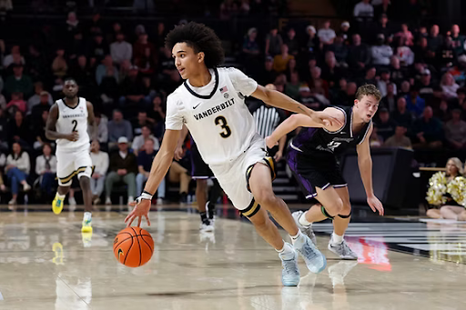
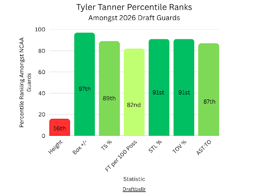
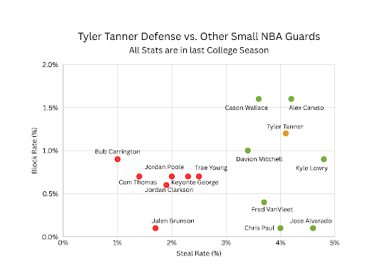
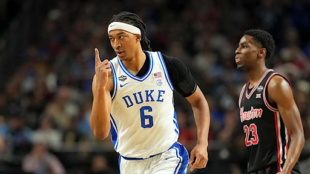
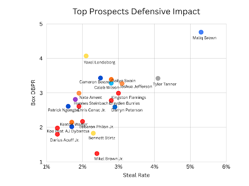

Three NBA Draft Prospects You Should Know More About
By Nick Noguchi | June 11, 2026

Introduction
Every year there are various prospects that slip through the cracks of NBA scouting departments. This could be due to some players not fitting the ideal NBA body, having playstyles that “don’t fit the modern NBA”, or that some players just are not seen by scouts. There is talent all across the draft even when it is not seen by everyone, and NBA GMs know this. So, I encourage you not to turn off the draft after the lottery when all the household names are off the board. NBA dynasties are built in the margins, from sleeper picks who return value far greater than the value of their draft slot. Recent examples include Ajay Mitchell, Peyton Watson, Andrew Nembhard, and Aaron Wiggins. All of these players were hardly talked about before their respective drafts but have played key roles for contending teams. There are not many better feelings than finding these players before the public eye and seeing them develop into a star. In order to help you achieve this feeling, I will encourage you to buy stock on these three draft prospects early.
Labaron Philon: Guard, Alabama, ESPN Big Board Rank - 16

Guard Without an Offensive Flaw
The most well-known player that I will be highlighting, Philon, gained a lot of popularity due to leading a very solid Alabama team and having great showing in March Madness. Despite his success, he is still not projected to be a lottery pick and many experts do not even consider him a top 5 guard prospect in the draft. While he may not end up being the absolute best prospect in the draft, if a team lands him outside of the lottery, that is a home run draft pick. Alabama’s roster was surrounded by inconsistent offensive contributors and there were countless times where Philon was the heartbeat of their team. Whenever Alabama needed a bucket they knew where to go. Being a reliable and efficient guard that could create his own shot, Philon is one of the most trustworthy guards in the country with the ball in his hands. While displaying tons of eye-candy with his flashy dribbles and explosive first step, he was also a fall-back plan for Alabama every time an offensive set broke down. He is an extremely fun to watch player that has proven to be one of the most productive prospects in the entire draft class.
Many questioned Labaron Philon’s decision to return to Alabama. After having a solid draft stock after his freshman year, many did not think he would benefit from another year in college. Philon silenced these doubts in his sophomore year, making an insane offensive leap:

Usually when a young player sees such a large increase in usage and volume that also leads to a lot of missed shots and an inefficient shooting season (i.e. Tahaad Pettiford). Philon flipped the script, he took the reins of Alabama’s offense and excelled, having one of the most efficient seasons of anybody in the nation. He improved in every offensive stat and solidified himself as a proven offensive engine. His development is a great indicator of how well Philon will adjust to the NBA and excel with more experience. In his sophomore season, he found where his spots were and learned when to attack. This new skill has been noted by many, and while a lot of draft analysts talk about how good of an offensive player Philon is, I do not think it is highlighted enough really just how elite he was on the offensive end last year.

Labaron Philon was amongst the best in the country at being a positive factor on the offensive end, and simultaneously he was also at the top of the nation in efficiency. On this scatterplot, Labaron Philon ranks the highest in offensive impact and efficiency amongst guards in this draft class. Naturally, big men have higher true shooting% because most of their shots are at the rim meaning their degree of difficulty is lower. This shows how Philon has no business being that high in true shooting % as a small guard. Additionally, Philon used his quick handle and 3-level scoring ability to create a lot of his own shots, shots off the dribble are known to be more difficult as a basketball player, making his efficiency even more of an anomaly. Labaron Philon simply took a lot of shots and made a lot of shots. What makes this even more impressive is that Alabama played one of the hardest strength of schedules of any team. Despite this, Philon maintained his elite efficiency that sets him apart from other young guards.
However, a huge and efficient offensive load takes a toll on a player's energy. The main concern around Philon is his defense, many doubt his ability to stay in front on defense and stay focused on that end. The real cause for Philon’s defensive struggles was his increase in volume on offense and how much of a workload he had in Alabama’s offense. However, in his Freshman season he was a well above average defender, sporting a 3.3 Defensive Box Plus Minus (80th percentile amongst guards). I would not be concerned about Philon being a liability on the defensive end. The offensive season that Labaron Philon just had should not go under the radar and he is simply a victim of being in a stacked guard draft class.
Tyler Tanner: Guard, Vanderbilt, ESPN Big Board Rank - 33

An Undersized Do-It-All Guard with an Immeasurable Impact on the Court
Tyler Tanner was without a doubt the heart and soul of Vanderbilt’s roster. Backed by his clutch performances, visible leadership on the court, and relentless motor, Tanner would have been a starter and key player for any team in the country. The truth is that if Tanner was 5 inches taller, he’d be a top 5 pick in this draft. It is extremely hard to find a single flaw within his game, he runs the offense and knows the right read just about every play. At the same time, he pressures ball handlers and uses his IQ to force turnovers. Tanner carried Vanderbilt to a 5 seed in March Madness, averaging 26.5 points, 4.5 rebounds, and 4.5 assists across his two games in the tournament. Tyler Tanner impressed in every aspect of basketball. You could not have asked for anything more from a 6’0 guard. Here is how Tanner’s production ranked amongst all other guards in this draft class:

Tyler Tanner is great-to-elite in every statistic that is essential for a guard. You will rarely see any other guards rank this highly across these statistics because it is extremely hard to run your team's offense while also being one of the best defenders on the court at all times. He generates steals, is very in control of his playstyle as he rarely forces and does not frequently turn the ball over, and on top of that he is very efficient and knows his spots as a small guard. The only real concern with him is his height, and you cannot blame GMs for being hesitant to draft a guard who would be the smallest starter in the NBA. But does it really matter if his production is this good? If he can do everything on the court and lead your team in various aspects, then his height is just an excuse to not draft him to be a franchise player.
Here is a graph showing Tyler Tanner’s college defensive steal and block rate in comparison to other small NBA guards. The “good” defensive guards are in green, and the “bad” defensive guards are in red. Tanner is shown in gold.

Tanner has clearly put himself within the tier of good defenders as his block and steal rate indicate that he will translate well defensively as these premier defensive guards have. The good defenders displayed on the graph show that despite lacking in size, an undersized guard can still be productive defenders at the highest level. Tanner’s defensive college production resembles that of an above average defender in the NBA. You may expect Tyler Tanner to get hunted on defense but it is the opposite with Tyler Tanner. He is a very pesky defender that opposing guards hate to deal with. He sets an example of intensity for his team, constantly pressuring the ball and harming the fluidity of his opponents’ offensive sets. You will rarely ever see Tanner taking a play off, he knows that with his frame he cannot afford to take a single play for granted. This is why Tanner is so easy to root for, he plays with such a motor and appreciation for the game and it is evident just from watching him on the court.
Recent small guards who have not panned out in recent drafts (e.g. Rob Dillingham, Jalen Hood-Schifino, James Bouknight) are not nearly as well rounded as Tanner and never impacted winning to the extent that Tanner has proved to do. Tanner’s polishness as a 20 year old is remarkable and you don’t even need to see all of these fancy stats to know that, it can be seen just from the eye test. If you watched a Vanderbilt game this year you could tell how essential he was to his team’s success. You could see him lead the team in composure, IQ, consistency, etc. The respect that his team had for him was displayed during clutch moments, when naturally, the team would defer to him and let him make a play that could decide if they won or lost the game. Tyler Tanner is obviously a great player, and I hope that GMs do not overthink him because of his height, because the skills and ability have been displayed for everyone to see.
Maliq Brown: Duke Forward, ESPN Big Board Rank - 77

A special defender whose talent has been hidden behind 5 star recruits
The biggest sleeper on this list, Maliq Brown is not even a top 5 ranked draft prospect on his own college team. Typically, when you turn on a Duke game, you are watching for the Boozer Twins, Dame Sarr, or Isaiah Evans. However, Duke’s success this season was heavily influenced by their 6’9 sixth man. Brown is elite at using his length to be a disruptor on defense, whether that is as a rim protector, guarding a screener, or switching onto smaller guards in space, he is phenomenal in all of these situations. Likewise to his teammate Cameron Boozer, Brown does not have a flashy game whatsoever. Although you may not notice him when watching Duke play, there is a very strong case for Maliq Brown to have been the best defender in all of college basketball. Below is a graph showing Steal Rate (%) in relation to the Box DBPR of a sample of the mostly highly touted draft prospects…and Maliq Brown.

Box DBPR (Box Defensive Bayesian Performance Rating) is a measure of a player’s defensive value. This stat essentially only uses a player’s individual box stats to calculate the Box DBPR of a player. It uses fouls, steals, blocks, and rebounds to calculate how many fewer points a team allows when an individual player is on the court. Steal Rate estimates the percentage of possessions on defense that a player gets a steal.
Maliq Brown is an outlier in terms of defensive impact. His high steal rate shows how elite Brown is at switching onto the perimeter and causing havoc using his 7'2 wingspan. It is unprecedented for a big to lead by such a large margin in steal rate. To further explain Brown’s influence on defense, the average steal rate for a college player is usually around 2.0% and “elite” is about 3.5%, Brown more than doubles the average and clears the elite threshold with a steal rate of 5.3%. Additionally, Brown’s Box DBPR was the highest in the country, and amongst players that may be selected in this year's draft, the next highest player is Yaxel Lendeborg, who is still considerably lower than Brown in Box DBPR.
Shown in the scatterplot above, even in comparison to the best players in the country, Brown was head and shoulders a better defender than any of them. Even a guy like Caleb Wilson who is highly considered the best defensive prospect in this draft class was not even near the caliber defender that Maliq Brown was in 2025. Furthermore, even the small quick “good defensive” guards such as Kingston Flemings or Brayden Burries did not generate steals nearly as frequently as Brown. Brown had a truly special season with Duke and that is backed up by the advanced defensive metrics.
Maliq Brown will most likely not be a star player for any team. His offensive game is very unpolished, lacking a jumpshot and not being a good free throw shooter. It is hard to picture him as a draft prospect due to him being 22 years old on draft night and having a very limited offensive game. But he deserves far more draft recognition than what he has received so far. If he is given the opportunity, he can make the same type of impact that Sacramento Kings center Dylan Cardwell has made thus far. Based on where Brown’s draft stock is right now, whichever team drafts him or signs him as an undrafted free agent will be getting great value and a guy who impacts winning.
Conclusion
Although some draft prospects might get posted more on Instagram and do cooler moves than the three guys I mentioned, those flashy players do not always end up being productive in the NBA. Labaron Philon, Tyler Tanner, and Maliq Brown have shown what they can do on the court and I believe that they impact winning far more than some of the players ranked ahead of them. These are some guys that many are not familiar with because the national media likes to talk about the guys that generate the most clicks. Casual draft watchers will probably ask, “Who?” when Maliq Brown or Tyler Tanner’s name is called, but that should not discourage you from being ecstatic if your favorite team lands one of these guys. Keep in mind Nikola Jokic was drafted during a Taco Bell commercial. Even though you may not have heard a lot about these guys before, don’t be surprised if they are household names within the near future.